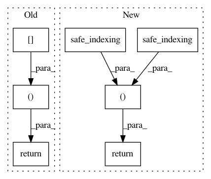

cddf39be59c3c1231d2d4fd3b9bfc10a21e63780,imblearn/under_sampling/prototype_selection/tomek_links.py,TomekLinks,_sample,#TomekLinks#Any#Any#,141
Before Change
links = self.is_tomek(y, nns, self.ratio_)
if self.return_indices:
return (X[np.logical_not(links)], y[np.logical_not(links)],
np.flatnonzero(np.logical_not(links)))
else:
return X[np.logical_not(links)], y[np.logical_not(links)]
After Change
safe_indexing(y, idx_under),
idx_under)
else:
return (safe_indexing(X, idx_under),
safe_indexing(y, idx_under))
In pattern: SUPERPATTERN
Frequency: 3
Non-data size: 7
Instances
Project Name: scikit-learn-contrib/imbalanced-learn
Commit Name: cddf39be59c3c1231d2d4fd3b9bfc10a21e63780
Time: 2017-08-24
Author: g.lemaitre58@gmail.com
File Name: imblearn/under_sampling/prototype_selection/tomek_links.py
Class Name: TomekLinks
Method Name: _sample
Project Name: scikit-learn-contrib/imbalanced-learn
Commit Name: cddf39be59c3c1231d2d4fd3b9bfc10a21e63780
Time: 2017-08-24
Author: g.lemaitre58@gmail.com
File Name: imblearn/under_sampling/prototype_selection/neighbourhood_cleaning_rule.py
Class Name: NeighbourhoodCleaningRule
Method Name: _sample
Project Name: scikit-learn-contrib/imbalanced-learn
Commit Name: cddf39be59c3c1231d2d4fd3b9bfc10a21e63780
Time: 2017-08-24
Author: g.lemaitre58@gmail.com
File Name: imblearn/under_sampling/prototype_selection/random_under_sampler.py
Class Name: RandomUnderSampler
Method Name: _sample